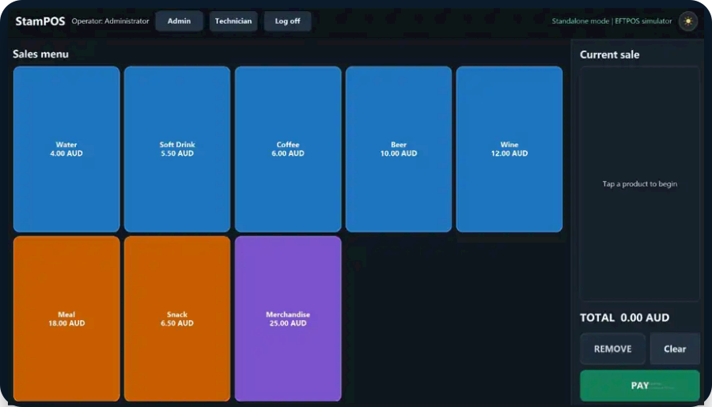

SalesFast touch checkout
Large colour-coded product tiles, a clear current-sale panel and direct cash or card payment actions.
Built for events and busy counters
StamPOS combines a touch-friendly checkout, local products and sales data, staff access, reporting, receipt printing and Linkly-connected EFTPOS in one Windows application.

The product
Each role sees the functions it needs, keeping everyday selling simple while management and technical tools remain available when required.
Large colour-coded product tiles, a clear current-sale panel and direct cash or card payment actions.
Manage products, employees, transactions, reports, receipts, hardware and payment settings from the terminal.
Readiness checks, diagnostics, database maintenance and support tools help keep deployments reliable.
What StamPOS does
Large product buttons and a focused current-sale workflow keep queues moving.
Tap note denominations, track the tendered amount and show change due clearly.
Products, staff, configuration and trading records remain available on the Windows terminal.
Cash-up and X/Z reporting support single-day and multi-day operations.
Print customer receipts through supported Windows and network printer workflows.
Separate Sales, Administrator and Technician functions for clearer day-to-day operation.
Clear cash workflow
Press $20 twice for a $35 sale. StamPOS shows $40 tendered and $5 change due before completing the transaction.
Connected EFTPOS
StamPOS records the sale locally and sends the card-payment request through Linkly. The operator sees a clear result while transaction references are retained for reconciliation and recovery.
Learn more
Review setup guidance, compatible hardware, payment information or contact us directly.
Installation, products, events, payments and everyday operation.
CompatibilityWindows terminals, receipt printers, cash drawers and network requirements.
LinklyConnected EFTPOS, transaction recovery, receipts and reconciliation.
HelpFind documentation or contact StamPOS for setup and troubleshooting assistance.
Talk to StamPOS
Tell us about your terminals, printers, payment requirements and operating workflow.